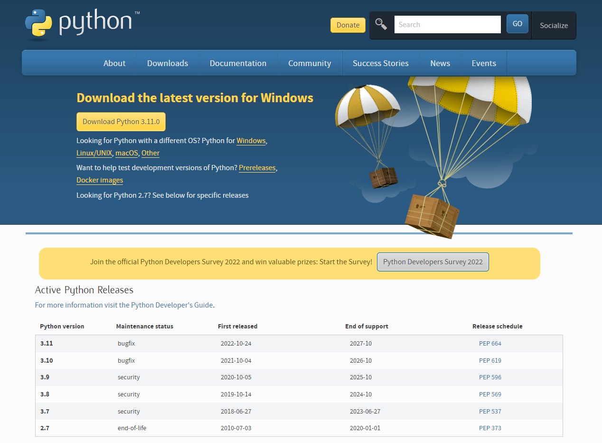
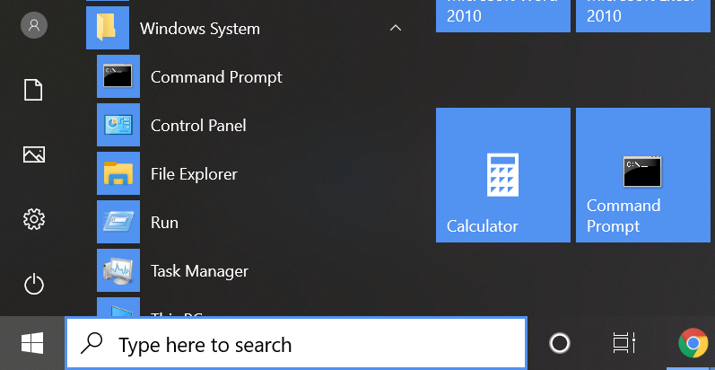
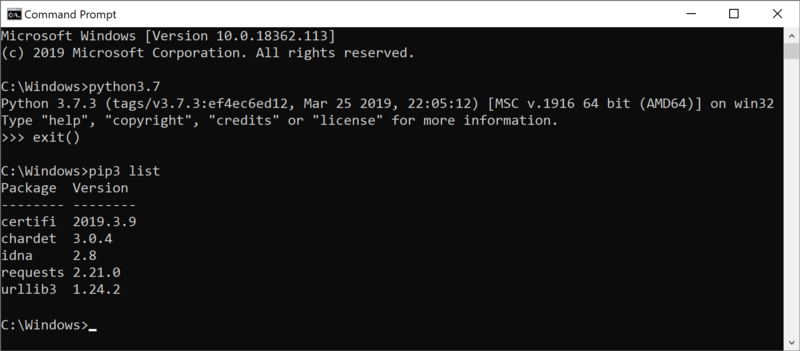
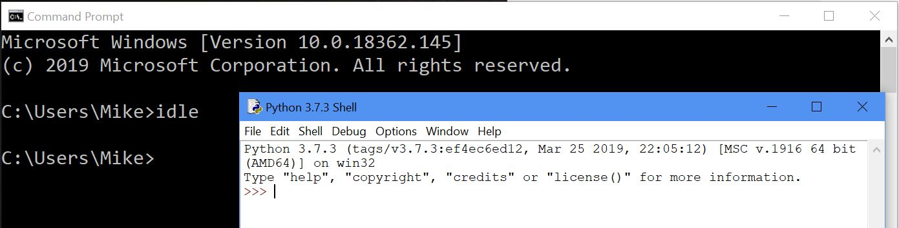
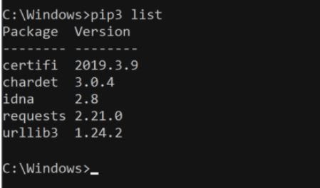
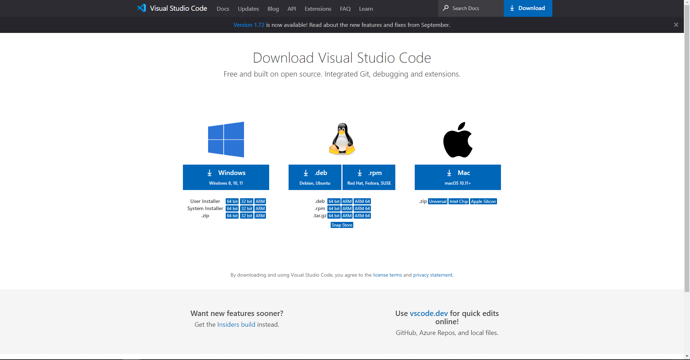
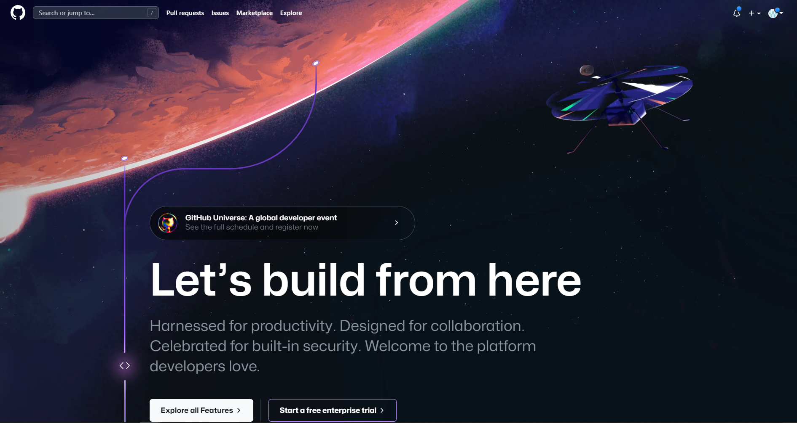
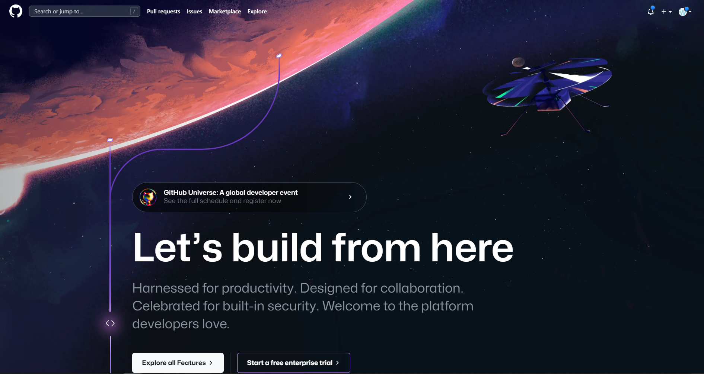

Python
python.orgPython Install
Command Line Python
If you are unfamiliar with the Windows Command Prompt, you are not alone. Windows designers have made its use rare for non-programmers. But it remains a very useful tool for working with programs like Python (so much so, the author created a tile for it on the right above).
To access the command line, open the Start Menu via clicking the Start Button, lower left of the screen. Scroll the left side all the way down to Windows System - click the icon and sub menu items pop in, select Command Prompt with the black icon.
Unlike the Python app noted in the previous page, the Command Prompt does not put you in a REPL or IDLE. It is the Windows command line and you can perform many system functions. It is handy to know where to find the Command Prompt for system administration.
Python Command Prompt
You can access Python in the Command Line by just typing , , or , , or, depending on which version you installed. If you have more than one version installed, you'll need to be more specific. You will then get the familiar REPL prompt.pythonpython3python3.7python3.8 python3.9
If you have not used Python before this and not installed the app as on the previous page, typing may take you to the Microsoft Store to download the components. Follow the previous page if it does so.python
IDLE
Typing the word in the command prompt runs the IDLE Python editor, just like installing the app on the previous page. Rather than showing up in the command prompt window, a new IDLE window will appear (see image below).idle

pip3
The pip package manager is available for this install of Python as well, pip opens up a world of open source packages to install for your projects.
Typing will list the currently installed packages. Consult the pip documentation (available at the link below) on all the commands used to work with packages with pip.pip3 list
Wrap-Up
learn.adafruit.comWindows 10 May 2019 update opens up a new, world of Python 3 on Windows.
If you want to learn more about using Python, go to python.org where you can find documentation, community and more.
Documentation for Python's standard library, along with tutorials and guides, are available at docs.python.org.
Visual Studio Code
code.visualstudio.com
Visual Studio Code Install
What I Want From VSCODE
- Run Python
- Autocomplete
- Linting (highlights syntactical and stylistic problems)
- Auto formatting (auto pep8)
- Mini Map
- Extra like themes, file icons, multiline editing, etc.
Visual Studio Code Extension
- Code Runner
- pip install pep8
- Code-preferences-setting-python
- Material Icon Theme
GitHub
github.com 

Why GitHub
- A Nice Profile
- It makes it easy to contribute to your open source projects
- Documentation
- Showcase your work
- Markdown
- GitHub is a repository
- Track changes in your code across versions
- Integration options with common platform
GitHub Setp
- Sign In GitHub
- GitHub Extension
- Create Repository
- Clone GitHub Repository from VSCode
- Commit
- Push